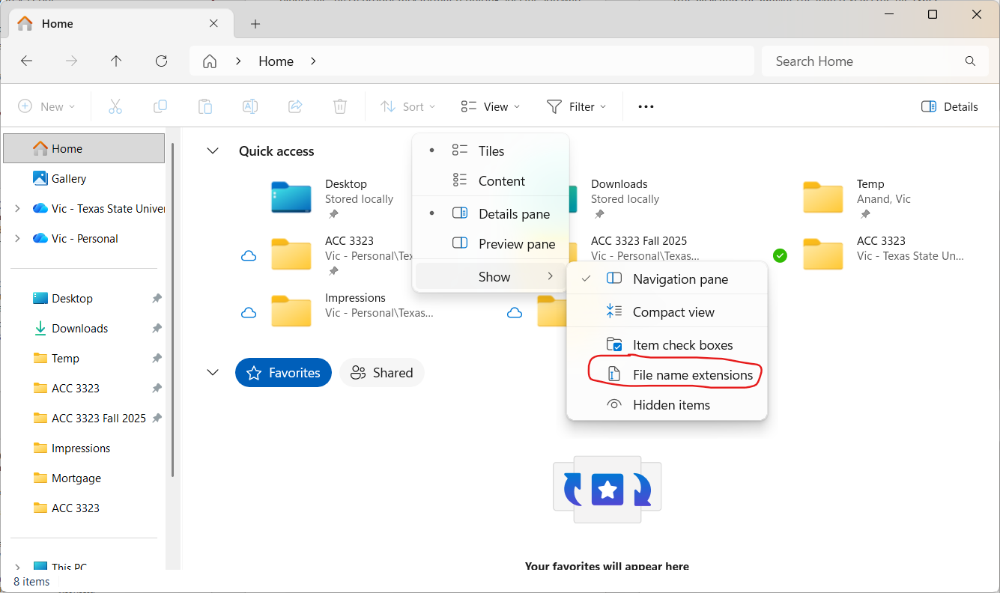
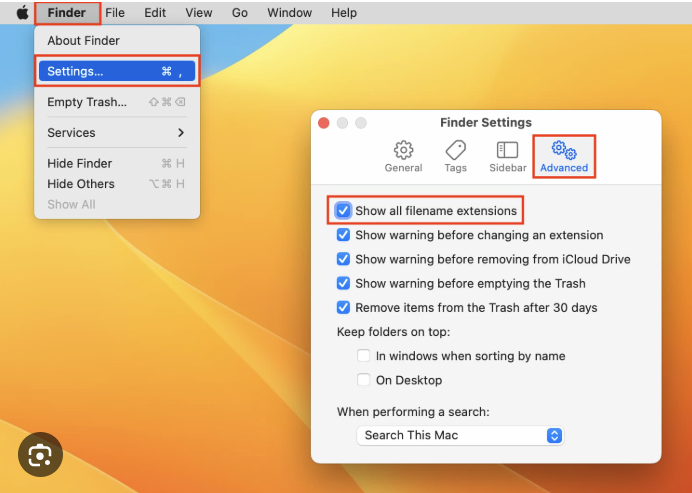
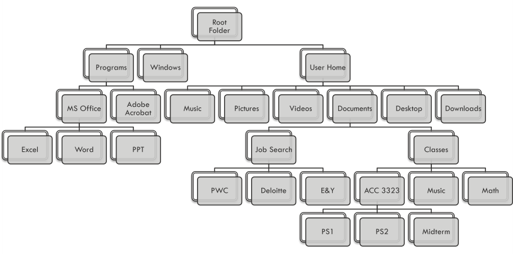
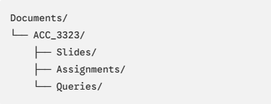

Working with Files and Folders#
Motivation#
When you see a topic like “Working with Files and Folders” in a university-level data analytics course, your initial reaction might be skepticism. You might think, “I am not in kindergarten, and this is not a remedial computer class.”
However, in professional accounting and data analysis, file and folder organization is not a basic housekeeping chore – it is a critical internal control.
The Downloads Folder Trap#
Most of my current and past students have fallen into the Downloads Folder Trap. Students tend to store most, if not all of their files in their Downloads folder. The trap then works like this:
You download a dataset or homework file from Canvas. It automatically lands in your computer’s Downloads folder.
You open the file, work on it, and then close it.
The next day, you download the same file again from Canvas to make a quick update.
Without realizing it, you have created multiple versions of the same file.
When you open the newly downloaded file, you cannot find your work from the previous day. You panic, thinking you have lost your work.
Cause of The Downloads Folder Trap#
The root cause of this problem is that you likely do not understand what files are, and therefore do not know how to organize them. This is not just a student problem; it is an industry reality. The current generation of students and young professionals grew up in an era of technology where an understanding of file and folder management is not always necessary. iPhones, iPads, and Chromebooks do an excellent job of hiding details of file and folder management from users. When a young person enters college or the workforce, they find the File Explorer (Windows) or Finder (Mac) somewhat bewildering, and do not understand its capabilities. That leads to bad practices like storing everything in Downloads.
This behavior is very common. Consider this article that documents this phenomenon.
In a professional setting, sloppy file organization leads to severe consequences. If an auditor or financial analyst cannot locate the exact version of a raw data file used for a regulatory filing, or if a client-provided ledger is overwritten and lost, the audit trail is broken.
A broken audit trail means your work is neither auditable nor reproducible. In professional accounting, if your analysis cannot be verified and reproduced by someone else, your analysis is effectively useless. Proper file and folder discipline ensures:
Audit Trails: A clear record of where your raw data came from, what transformations were applied, and where the final output is saved.
Version Control: Ensuring that you are always working with the master, up-to-date version of a dataset, rather than a stale duplicate.
Client Organization: Keeping confidential client data strictly separated and structured.
What is a File?#
Understanding Computer Storage and Memory#
Before we can understand files, we must first learn about how computers store data. Your computer uses two types of memory to store data, random access memory (RAM) and disk storage.
When you open Visual Studio Code (VS Code) and write a SQL query, that text exists only in your computer’s temporary memory (RAM). If your laptop battery dies, if the program crashes, or if you close VS Code without saving, your work is permanently lost. Thus, RAM is temporary storage. It does not persist when you turn off your computer.
To make your work permanent, you must write that data to your disk storage. When you do this, you create a file. Thus, a file is data written to a disk. Once written, the data is stored permanently, and remains even if you turn of your computer.
Pro Tip: As you write SQL queries in this course, save them as files! You will frequently find that a complex query you wrote weeks ago is the perfect starting point or reference for a new assignment. Saving your code allows you to build a personal library of reusable analytical tools.
You may wonder why computers have temporary and permanent storage. Memory (RAM) is temporary, but it is very fast. It allows your computer to operate quicker. However, since RAM is temporary, permanent disk storage is needed to ensure that data persists when a computer is powered off. The following table summarizes the attributes of memory and disk storage.
Attribute |
Random Access Memory (RAM) |
Disk Storage (SSD / HDD) |
|---|---|---|
Type |
Temporary |
Permanent |
Speed |
Extremely fast |
Slower than RAM |
Purpose |
Holds data active programs are currently using |
Holds files and programs when not in active use |
Behavior on Shutdown |
Cleared completely |
Persists indefinitely |
Types of Files#
Every file stored on your disk falls into one of two categories: *text files or binary files.
Text Files: These contain plain, unformatted text characters. They can be opened and read by virtually any text editor on any operating system (such as Notepad on Windows or TextEdit on macOS).
A SQL script file (with a .sql extension) is simply a plain text file containing SQL code.
Binary Files: These are saved in a proprietary format and require specialized software to open. For example, a Microsoft Excel spreadsheet (.xlsx) or a Microsoft Word document (.docx) is a binary file. If you open an Excel file in a plain text editor, you will see a chaotic mess of unreadable symbols and computer code.
File Extensions#
Your operating system uses a “file extension”, the letters following the dot at the end of a filename (such as .sql, .txt, .xlsx, or .docx)—to determine which program should open that file by default.
By default, both Windows and macOS hide file extensions to make the interface look cleaner, relying instead on icons to tell you a file’s type. However, as a data analyst, you may occasionally want to see and even change a file’s extension. For example, if you save SQL code as a text file (.txt), you may wish to change the file’s extension to .sql. This does not change the file’s contents; it just changes the default program that will run when you double-click on the file.
To view file extensions:
On Windows:
Open File Explorer.
Click on View in the top menu bar.
Hover over Show at the bottom of the dropdown menu.
Click “File name extensions”.

On MacOS:
Open Finder.
Click on Finder in the top menu bar, then select Settings (or Preferences in older macOS versions).
Go to the Advanced tab.
Check the box that says Show all filename extensions.

What is a Folder?#
Most modern computers have hundreds of thousands of files stored on their drives. To keep these files organized and easily retrievable, operating systems use a file system that structures files into nested folders (also referred to as directories).
A folder is simply a container that can hold files or other folders (called subfolders or subdirectories).
At the very top of this organizational structure on every drive is the root folder. The root folder has no parent folder; it is the starting point of the entire file system.
On Windows, the root folder of your primary hard drive is represented by C:.
On MacOS, the root folder is represented by a single forward slash / .
Within this root folder, the operating system creates separate folder hierarchies for system files, installed programs, and user files. Users should create and manage their own folder hierarchies under their dedicated user directories (such as Documents or Desktop).
Below is a typical folder hierarchy on the Windows operating system. The hierarchy on macOS is remarkably similar. In this example, the user has created a job search folder in his documents, with one subfolder for each application submitted. Similarly, he has a folder for classes, with a separate subfolder for each class, and separate subfolders within each class folder for the different assignments.

File Paths: Your Data’s Street Address#
Every folder (except the root folder) is nested inside exactly one parent folder. Every file resides in exactly one folder. Therefore, every single file on a computer has a unique file path. Think of a file path as your file’s digital street address. It provides the sequence of directories that a program must follow to locate and read that file on the disk.
There are two primary file path syntaxes, depending on your operating system:
Windows File Path: Windows uses backslashes () to separate folders, starting with the drive letter. For example,
C:\Users\username\Documents\ACC_3323\query.sqlmacOS File Path: Mac uses forward slashes (/) to separate folders, starting from the root folder. For example,
/Users/username/Documents/ACC_3323/query.sql
Pro Tip: Copying File Paths Quickly#
When you are writing code in VS Code, writing analytical scripts, or referencing data in Python, you will frequently need to provide the exact path to a data file. Typing out a long file path manually is slow and highly prone to spelling errors.
Instead, copy the path directly from your operating system:
Windows File Explorer: Right-click the file and select “Copy as path”. This copies the absolute path enclosed in double quotes directly to your clipboard.
macOS Finder: Right-click (or two-finger tap) the file, then hold down the Option key. The menu option will change, allowing you to click “Copy Filename as Pathname”.
Setting Up a Folder for This Class#
To prevent the “Downloads Folder Trap” and establish professional folder discipline, you should create a dedicated folder for this course.
Navigate to your Documents directory.
Create a new folder named ACC_3323, ACC 3323, Data Analytics, or whatever name suits you.
Inside the new folder, create the following subfolders:
Slides — to store the PowerPoint decks downloaded from Canvas.
Assignments — to keep your homework and project folders separated.
Queries — to store your plain-text SQL files (.sql).
Your final folder structure should look like this:

Pinning Your Folder to Quick Access or Favorites#
To make saving and retrieving files fast and painless, pin your new class folder to your sidebar in File Explorer (Windows) or Finder (Mac):
Windows File Explorer: Drag your new folder into the Quick Access section at the top of the left-hand sidebar.
macOS Finder: Drag your new folder into the Favorites section of the left Finder sidebar.
This simple step ensures that whenever you save a file or open a database query, your class directory is only a single click away.
Managing Files and Folders in Visual Studio Code#
Visual Studio Code (VS Code) is a powerful, professional tool with excellent file and folder management capabilities. However, to utilize it properly, you must follow one golden rule:
The Open Folder Rule: You must always open a folder in VS Code (File > Open Folder) and work within that folder. Do not simply double-click and open standalone SQL files.
Opening a folder sets the “workspace” for VS Code. It populates the left-hand explorer sidebar with your entire folder hierarchy, allowing you to create, save, and manage your queries directly inside your organized class folders.
Step-by-Step Workspace Setup in VS Code:
Open VS Code.
Go to the top menu and select File > Open Folder (on Mac, File > Open).
Navigate to and select your newly created folder.
Click Select Folder (or Open).
Your left-hand sidebar in VS Code will now display your class folders (Slides, Assignments, Queries). You are now working within an organized workspace.
Creating, Saving, and Deleting SQL Files#
Now that your folder is open in VS Code, you can manage files directly in VS Code.
To Create a File: Hover your mouse over the Queries folder in the left sidebar and click the New File icon (which looks like a sheet of paper with a plus sign). Name the file class_demo.sql.
Crucial Step: You must type the .sql extension. This tells VS Code that you are writing SQL code, which instantly activates automatic text coloring, error highlighting, and autocomplete.
To Save Your Work: Press Ctrl + S (Windows) or Cmd + S (Mac). This writes the temporary text from your RAM directly to your permanent disk storage.
To Delete a File: If you need to remove a file, simply right-click it in the VS Code sidebar and select Delete. This will safely move the file to your computer’s Recycle Bin or Trash.